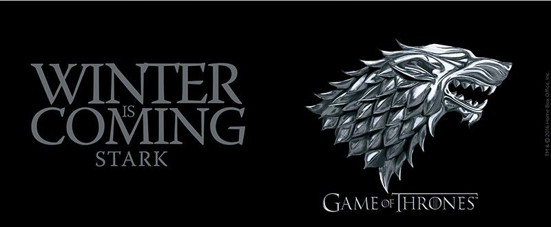

| No. Overall | No. in season | Title | Directed by | Written by | Original air date[20] | U.S. viewers (millions) |
|---|---|---|---|---|---|---|
| 1 | 1 | "Winter is Coming" | Tim Van Patten | David Benioff & D. B. Weiss | April 17, 2011 | 2.22 |
| 2 | 2 | "The Kingsroad" | Tim Van Patten | David Benioff & D. B. Weiss | April 24, 2011 | 2.20 |
| 3 | 3 | "Lord Snow" | Brian Kirk | David Benioff & D. B. Weiss | May 1, 2011 | 2.44 |
| 4 | 4 | "Cripples, Bastards, and Broken Things" | Brian Kirk | Bryan Cogman | May 8, 2011 | 2.45 |
| 5 | 5 | "The Wolf and the Lion" | Brian Kirk | David Benioff & D. B. Weiss | May 15, 2011 | 2.58 |
| 6 | 6 | "A Golden Crown" | Daniel Minahan | Story by: David Benioff & D. B. Weiss
Teleplayed by: Jane Espenson & D. B. Weiss |
May 22, 2011 | 2.44 |
| 7 | 7 | "You Win or You Die" | Daniel Minahan | David Benioff & D. B. Weiss | May 29, 2011 | 2.40 |
| 8 | 8 | "The Pointy End" | Daniel Minahan | George R. R. Martin | June 5, 2011 | 2.72 |
| 9 | 9 | "Baelor" | Alan Taylor | David Benioff & D. B. Weiss | June 12, 2011 | 2.66 |
| 10 | 10 | "Fire and Blood" | Alan Taylor | David Benioff & D. B. Weiss | June 19, 2011 | 3.04 |
|  | ||||||
| Calgary | ||||||